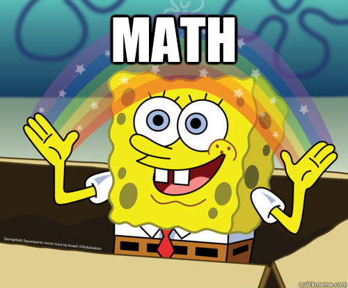

class: center, middle # Intro --- ## The good old days ### The correct way or the highway Probabilistic algorithms limited mostly to games and NP-hard problems. ??? Game developers of the past weren't stupid, they just have tighter constraints. It's no like they didn't want to do it correctly, they just couldn't. Same with big data. --- class: center, middle ## BIG DATA<sup>™</sup> changed things <img src="img/alot.png"> Too expensive to do it correctly. ??? Too expensive: both time and space --- ## Probabilistic streaming algorithms ### General ideas - *Sketches*: store only a rough description of the data - *Mostly correct*: answer with a certain probability of correctness - *Streaming*: process data as it's coming in ### Problems solved Given an endless stream of values - *Cardinality*: how many distinct elements have we seen? - *Membership*: has this value ever appeared in our stream? - *Frequency*: how often does this value appear in the stream? --- .chapter[Cardinality] ## Cardinality ### Given a list `n` values, how many of them are distinct? Examples: * How many unique users visited our app last month? * How many visited the /blackfriday page? * How many distinct browser fingerprints did we have? * How many links to facebook/youtube/twitter did our users share? * How many unique IPs tried to hack us in the last day? --- .chapter[Cardinality] ## Correct solutions: * Bitmap * Hash table * Trees All of these grow linearly with the size of the data. ## Probabilistic solutions: * Linear counting * HyperLogLog --- class: center, middle # HyperLogLog --- .chapter[HyperLogLog] Assume we have a random number generator that generates *uniformly distributed* random numbers. ### Generate 2 numbers: In binary, probably one is `0xxx`, the other is `1xxx` ### What about 4 numbers? Probably they start with `00xx`, `01xx`, `10xx`, `11xx` ### Generate 2<sup>10</sup> uniformly distributed numbers? There's probably a number that starts with `0000 0000 00xx ...` --- .chapter[HyperLogLog] ### Going the other way around Search for the number that starts with the most zeroes (i.e smallest number). Is it `0000 0000 001x ...`? It follows that there are around 2<sup>10</sup> numbers in there, give or take. --- .chapter[HyperLogLog] ### Useful analogy: Imagine * flipping a coin 10 times * writing down the longest streak of heads: H T H H T H H H T T => 3 * repeat Someone tells you they did this a bunch of times and got: * longest streak of 2 heads ⇒ they probably did it only a few times * longest streak of 8 heads ⇒ wow they must have flipped that coin a lot --- .chapter[HyperLogLog] ## The LogLog<sup>*</sup> algorithm: - for each value: - apply a hash function (eg Murmur, SipHash, Tiger) - count the number of leading zeroes in the hash - remember the maximum number of leading zeroes from all values - <code>cardinality = 2<sup>max_zeroes</sup></code> .footnote[<sup>*</sup>Also called FM Sketch] ??? The hash function must uniformly distributes results! --- .chapter[HyperLogLog] ## Some minor issues: * The standard deviation is a few orders of magnitude. * It only returns powers of two * Outliers completely mess up the result * If for a given value our hash function returns 0, the algorithms believes there are 2<sup>64</sup> unique values. ??? [LOGARITHMIC BAR CHART showing the average error for N runs] --- .chapter[HyperLogLog] # Make it Hyper! ## Run it multiple times * Use `m` buckets * Assign each hashed value to a bucket * Average results from all buckets to get the result $$result = { m \over { {1 \over count_1} + {1 \over count_2} + ... + {1 \over count_m}} }$$ <!-- $$count = {m \over {\sum_{i=1}^{m}} {1 \over count_i} }$$ --> ??? *Note:* Using the harmonic mean smoothes out outliers. --- .chapter[HyperLogLog] ## How to pick the bucket? Round-robin requires state, not ideal. Just use the first <code>log<sub>2</sub>(m)</code> bits of the hash to pick the bucket. * e.g for 1024 buckets use the first 10 bits --- .chapter[HyperLogLog] ## Much more consistent [GRAPH WITH THE RESUlTS so far] --- .chapter[HyperLogLog] ## Much more consistent ...but constantly overestimating: <pre> run 0: 1382608 run 1: 1363920 run 2: 1404200 run 3: 1411011 run 4: 1391365 run 5: 1387650 run 6: 1417728 run 7: 1366681 run 8: 1376531 run 9: 1432453 <pre> --- class: center .chapter[HyperLogLog] ## More magic! ###...It's fine, just multiply with 0.7212.  --- .chapter[HyperLogLog] ## Space complexity If hash values are values between `1` and `n` * storing one such value: <code>log<sub>2</sub>(n)</code> bits * storing the number of leading zeroes: <code>log<sub>2</sub>(log<sub>2</sub>(n))</code> bits * multiplied by `m`, the number of buckets Most commonly used hash functions have 64 or 32 bit outputs. .footnote[This is where the "LogLog" part comes from] --- .chapter[HyperLogLog] ## Space complexity *1 bucket:* <code>log<sub>2</sub>(log<sub>2</sub>(2<sup>64</sup>)) = 6</code> bits *1K buckets:* `1024 * 6bits = 768bytes` * error rate = *TODO* *16K buckets:* `16384 * 6bits = 12288bits = 12KB` * error rate = *TODO* <br> *Note:* Can be even better by having sparse buckets if the cardinality is low. --- .chapter[HyperLogLog] ## Other notes #### Tunable error rate by * tuning the number of buckets * picking a longer hash function #### Can combine multiple HLL instances * just add up the buckets * useful in distributed systems #### Some assembly required - choosing a weak hash function might make it vulnerable to grossly over estimating - for small number of elements it's better to switch to something else, e.g linear counting --- .chapter[Membership] # Membership ###Given a large list of values, is _X_ in that list? Examples: * When a user visits our page, is this his first visit? * When logging an exception, is this something new or did we encounter it before? * Is this ID in the database? --- .chapter[Membership] ## Correct solutions<sup>*</sup> * Hash tables * Trees of many kind Just as before, these grow linearly with the size of the data. ### Probabilistic solutions * Bloom filters (and their many variants) * Quotient filter * Cuckoo filter .footnote[*basically whatever is used to implement database indexes] ??? Tree types: balanced binary, radix trees, B-trees --- class: center, middle # Bloom filter --- .chapter[Bloom filters] ## Initialization #### Prepare list of `n` hash functions Murmur3, Jenkins, SipHash, etc. #### Allocate an array of `n` elements of `k` bits This will store our sketch of the data Array with an entry for each hash function (this will be our sketch) --- .chapter[Bloom filters] ## Updating For every element in the stream: * Apply all hash functions to the element * For each hash, update the appropriate row in our sketch with binary or: row |= hash --- .chapter[Bloom filters] ## Testing membership For a given element: * Apply all hash functions on the element * For each hash result, test the appropriate row in our sketch with binary or: `row_matches = row & hash` * If all rows match, return `true` --- .chapter[Bloom filters] Complexity --- .chapter[Bloom filters] ## Many variations #### Stable bloom filters * *TODO WHAT IS THIS* #### Scalable bloom filters * *TODO WHAT IS THIS* #### Continuous bloom filter * *TODO WHAT IS THIS* --- .chapter[Bloom filters] ## Caveats * Require walking over the entire dataset to rebuild * Good theoretical time complexity, but large constant due to hashing ## Alternatives Cuckoo filter getting more attention * Less available implementations --- .chapter[Frequency Estimation] # Frequency Estimation ## How often has this value appeared before? Examples: * How many requests has this IP done? * Is this one of the top most accessed articles? * How often is this exception occuring in the logs? --- .chapter[Frequency Estimation] ## Correct Solutions Not much of a surprise by now: * Hash table * Many kinds of trees ## Probabilistic Solutions * Count-Min Sketch * Lossy Count --- class: center, middle # Count-Min Sketch --- .chapter[Count-Min Sketch] ### Initialization #### Pick `d` hash functions with outputs between `0` and <code>w = 2<sup>k</sup></code> Good fit: multiplicative universal hashing<sup>*</sup> <code>h<sub>a</sub>(x) = (a*x mod 2<sup>k</sup>) div 2<sup>k−ℓ</sup>, for 0 ≤ x < 2<sup>k</sup> </code>, where * `a` is a randomly chosen odd number between `0` and <code>2<sup>k</sup></code> * `ℓ` is a randomly chosen number between `1` and `k` For `d` hash functions, just pick an `ℓ` and `d` values for `a`. #### Initialize an matrix of size `w × d` with zeroes This will hold our *sketch* of the real data <table class='diagram'> <thead> <tr> <th colspan=5>sketch</th> </th> </thead> <tbody> <tr><td>0</td><td>0</td><td>0</td><td>0</td><td>0</td></tr> <tr><td>0</td><td>0</td><td>0</td><td>0</td><td>0</td></tr> <tr><td>0</td><td>0</td><td>0</td><td>0</td><td>0</td></tr> </tbody> </table> Each hash function will generate indices in one row of the sketch .footnote[<sup>*</sup>Dietzfelbinger et al. http://www.diku.dk/~jyrki/Paper/CP-11.4.1997.ps] --- .chapter[Count-Min Sketch] ### Updating the sketch For every element in the stream * Apply each hash function <code>h<sub>i</sub></code> to the element obtaining a value <code>d<sub>i</sub></code> * On the <code>i<sup>th</sup></code> row of our array, at position <code>d<sub>i</sub></code>, increment with 1 <table class="diagram"> <thead> <tr><th>hashes</th></tr> </thead> <tbody> <tr><td>h<sub>0</sub>(e) = 0</td></tr> <tr><td>h<sub>1</sub>(e) = 4</td></tr> <tr><td>h<sub>2</sub>(e) = 1</td></tr> </tbody> </table> <span style="height: 1em; display: inline-block; vertical-align: top; padding-top: 1.5em">+</span> <table class="diagram"> <thead> <tr> <th colspan="5">old sketch</th> </tr> </thead> <tbody> <tr><td class='em'>0</td><td>2</td><td>1</td><td>3</td><td>3</td></tr> <tr><td>1</td><td>3</td><td>1</td><td>4</td><td class='em'>0</td></tr> <tr><td>3</td><td class='em'>1</td><td>1</td><td>0</td><td>4</td></tr> </tbody> </table> <span style="height: 1em; display: inline-block; vertical-align: top; padding-top: 1.5em">=></span> <table class="diagram"> <thead> <tr> <th colspan="5">new sketch</th> </tr> </thead> <tbody> <tr><td class='em'>1</td><td>2</td><td>1</td><td>3</td><td>3</td></tr> <tr><td>1</td><td>3</td><td>1</td><td>4</td><td class='em'>1</td></tr> <tr><td>3</td><td class='em'>2</td><td>1</td><td>0</td><td>4</td></tr> </tbody> </table> </div> --- .chapter[Count-Min Sketch] ### Obtaining an estimate Given an element `e` * Apply each hash function <code>h<sub>i</sub></code> to the element obtaining a value <code>d<sub>i</sub></code> * Collect the value in the <code>i<sup>th</sup></code> row of our array, at position <code>d<sub>i</sub></code> * Return the minimum of these values <table class="diagram"> <thead> <tr><th>hashes</th></tr> </thead> <tbody> <tr><td>h<sub>0</sub>(e) = 1</td></tr> <tr><td>h<sub>1</sub>(e) = 3</td></tr> <tr><td>h<sub>2</sub>(e) = 0</td></tr> </tbody> </table> <span style="height: 1em; display: inline-block; vertical-align: top; padding-top: 1.5em">indices in </span> <table class="diagram"> <thead> <tr> <th colspan="5">sketch</th> </tr> </thead> <tbody> <tr><td>0</td><td class='em'>2</td><td>1</td><td>3</td><td>3</td></tr> <tr><td>1</td><td>3</td><td>1</td><td class='em'>4</td><td>0</td></tr> <tr><td class='em'>3</td><td>1</td><td>1</td><td>0</td><td>4</td></tr> </tbody> </table> <span style="height: 1em; display: inline-block; vertical-align: top; padding-top: 1.5em">=</span> <table class="diagram"> <thead> <tr><th>values</th></tr> </thead> <tbody> <tr><td>2</td></tr> <tr><td>4</td></tr> <tr><td>3</td></tr> </tbody> </table> </div> <code style="background-color: white !important"> <em>estimated_occurances</em> = min([2, 4, 3]) = 2 </code> --- .chapter[Count-Min Sketch] ## Notes Conflicts can exist * the more hash functions we have, the better * the wider the array, the better *TODO chart with precision vs number of hash functions* How to choose parameters: * *TODO explain better* The parameters w and d can be chosen by setting `w = [e/ε]` and `d = [ln 1/δ]`, where the error in answering a query is within a factor of `ε` with probability `1 − δ`. --- .chapter[Count-Min Sketch] ## Results *TODO Chart with results, estimates vs reality* --- .chapter[Count-Min Sketch] ## Space used For 1% error rate in 1 billion 64bit numbers, we get * d = *TODO* * w = *TODO* * each element = 32bit * total space used = *TODO* --- .chapter[Count-Min Sketch] ## Notes * Choose `w` and `d` wisely from the start * Can add-up multiple count-min sketches with the same size and same hash functions, just like we do Bloom Filters and HyperLogLogs --- class: center, middle # Thanks!